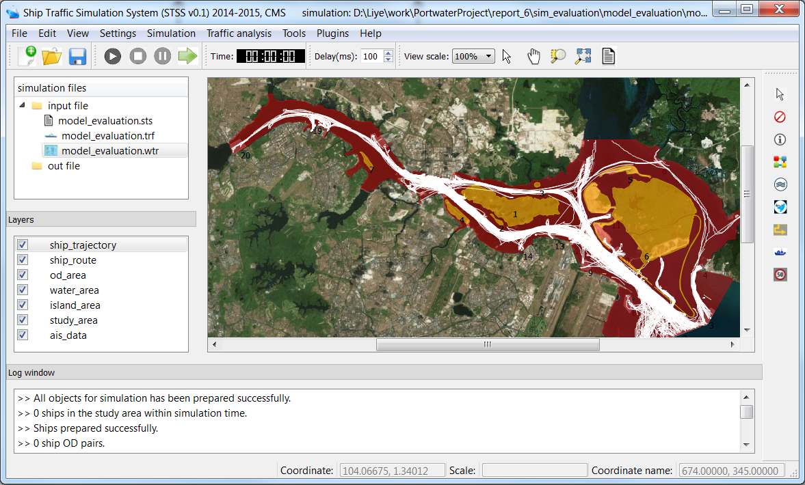
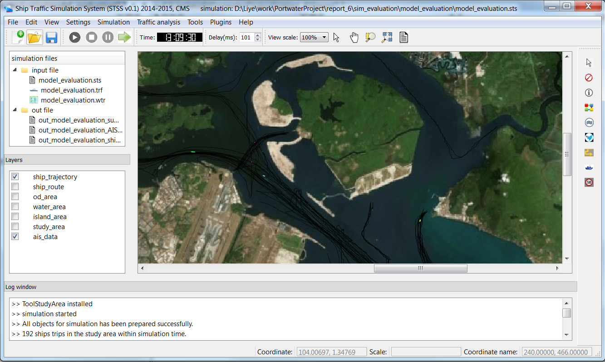

STSS is a ship traffic simulation system developed by the research group of Prof. Meng Qiang and Dr. Zhang Liye in Centre for Maritime Studies of National University of Singapore. It can be used for maritime traffic simulation, safety quatitive evaluation, ship emission calculation and ship operation management optimization.
The software offers flexibility in several respects: the ship routes can be input from GUI manually or extracted from historical data automatically. Ship OD demand can be analysed automatically using historical AIS data or input by users. All types of ships can be simulated based on user defination. The naviagation behaviors are data driven models, which are calibrated using the advanced optimization techniques based on big data.
The demo video of STSS v0.1 can be found on [ Youtube (Demo of STSS v0.1)]. It is an old version, the newest version is 0.6 and supports plugin.
This software is currently still under development and is not open source at current stage. For more information about how to access this software, please contact Prof. Meng Qiang.
 